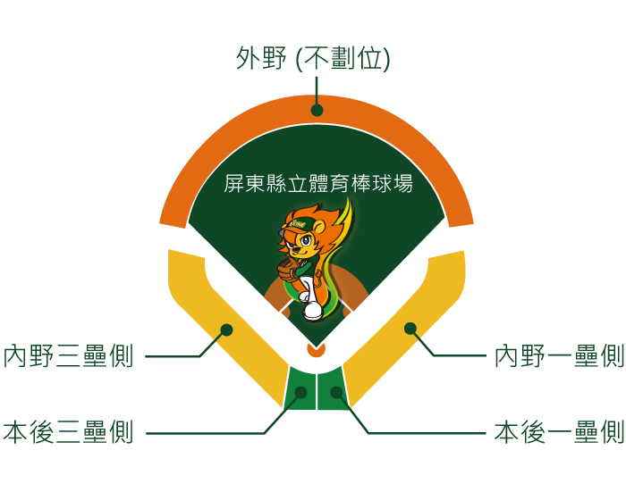

屏東縣立體育棒球場 |
|
| 簡介 | |
| 與鷹、熊兩支球隊同時加入中華職棒行列的，就是位於最南端的職棒球場－－屏東球場。 屏東球場可由屏東搭車即可抵達，球場附近可供停車的車位也相當多，交通雖非十分四通八達，但尚稱便利。 除交通便利之外，屏東球場的球場各項設施也稱得上齊全，尤其球員休息室內附設的淋浴設備，堪稱全省職棒球場的創舉，光就這一點來看，屏東球場就比起其他場地更有一顆體貼的心。 屏東球場佔地寬廣，尤其是球場的全壘打線距離很長，左、右外野是三百八十八呎，邊線為三百二十五呎，中外野更深達四百一十五呎，如此遙遠的全壘打線，也讓選手們在此球場打擊時易添困難度，相對地，對投手而言，屏東球場則是不可多得的自然保護場地。 屏東球場雖有夜間照明設備，但是因為燈光所架設的位置並非十分恰當，在進行夜間比賽時，常會發生球員打出的球溶入燈光中的情形，讓守備球員防守時產生錯覺，這是屏東球場的缺點。 位於溫暖的台灣南端，屏東球場很少下雨，偶有午後的雷陣雨，但亦不影響球賽的進行，總括來說，屏東球場仍是一座相當適宜進行職棒比賽的場地。 |
|
| 場內座位資訊 | |
|  | |
| 觀眾數：10,000 席 / 內野數：5,000 席 / 外野數：5,000 席 / 內野：紅土 右外野：320 英呎 / 左外野：320 英呎 / 中外野：400 英呎 / 大螢幕：無 |
|
| 交通資訊 | |
| 大眾運輸 | 屏東客運（潮州、東港方向）搭至復興國小站，往前走到棒球路右轉即可抵達棒球場。 |
| 火車 | 西部縱貫鐵路高雄站，換屏東線電聯車至屏東站，可搭客運至棒球場。 |
| 自行開車 | 南二高麟洛交流道，取和生路（1號道路）西行，至復興路（27號道路）右轉，於棒球路左轉即達。 |
| 停車資訊 | 汽車 / 機車：球場週邊有收費停車場。 |